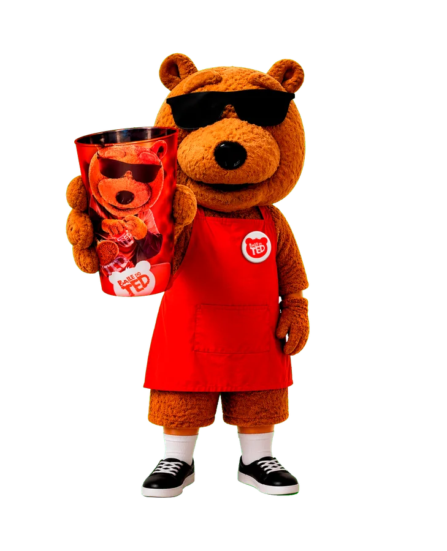
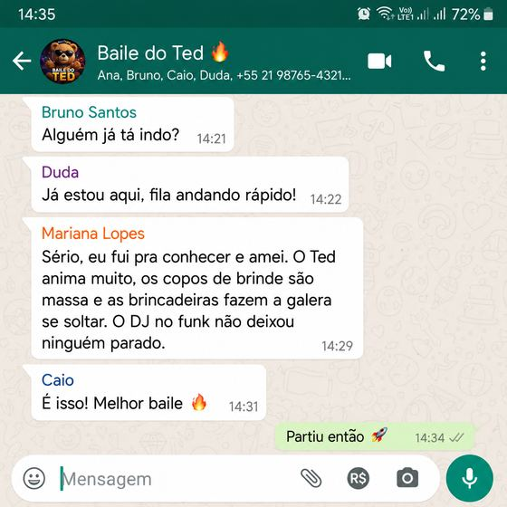
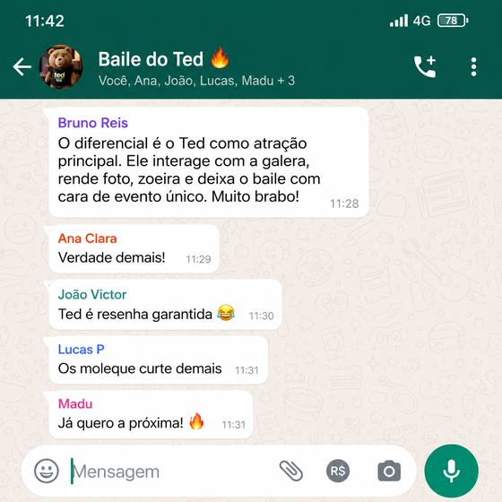
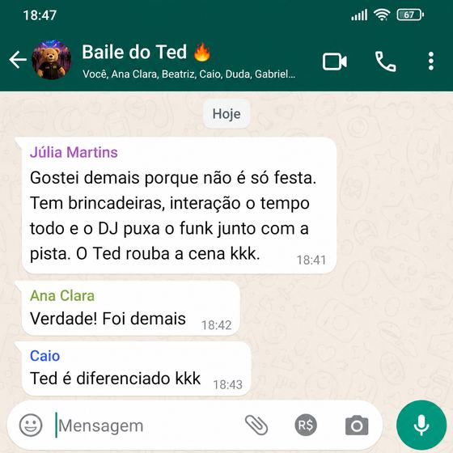
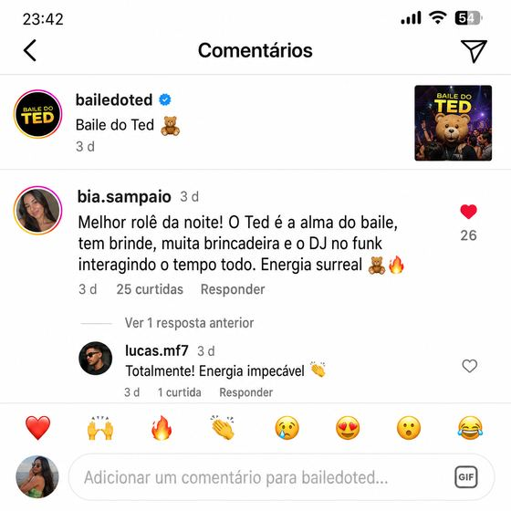
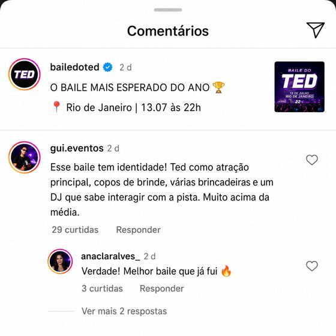
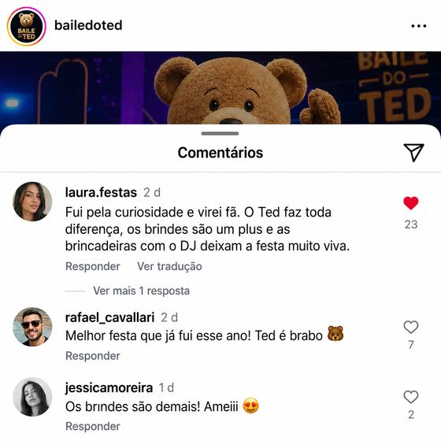
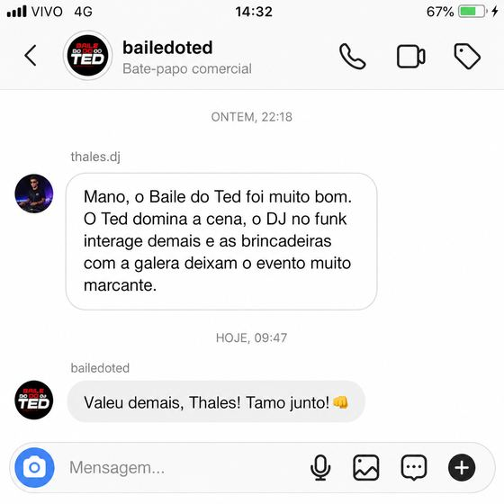
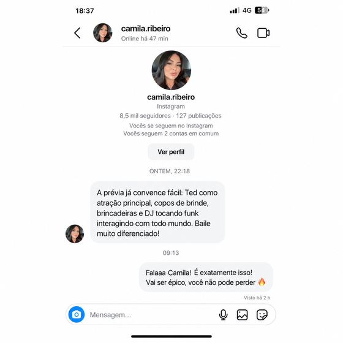

Funk + eletrofunk · no palco desde 2018
Quando o Ted sobe, a pista explode.
Personagem, DJ, bazuca de CO2 e brinde pro público. Uma atração que vira foto, vídeo e assunto no dia seguinte.
- Desde
- 2018
- Estados
- +7
- Público parado
- 0

Agenda oficial
Próximos shows
Onde o Ted vai estar. Toque na arte para ver em tela cheia.
Quer o Ted na sua cidade? Consulta a data com a gente antes que alguém pegue.
Consultar disponibilidadeO que você contrata
Não é presença.
É show.
O Ted chega pra fazer barulho: entrada marcante, DJ com a pista na mão e o público inteiro querendo foto.
-
Personagem
O Ted em pessoa
Visual forte e carisma do começo ao fim. Recebe, brinca, posa pra foto e vira o centro da festa.
-
Música
DJ de funk e eletrofunk
Equipamento próprio de DJ e repertório pensado pra não deixar ninguém parado. Precisa só de uma entrada RCA no som da casa.
-
Efeitos
Bazuca de CO2 e gerbs
Jato de CO2 na pista e efeitos de faísca indoor. É o momento que todo mundo filma.
-
Brindes
Presente pro público
Copos, adesivos e pirulitos distribuídos durante o show. A galera leva o Ted pra casa.
-
Conteúdo
Foto, vídeo e story
Sessão de fotos no camarim e interação na pista. Seu evento aparece no celular de todo mundo.
-
Divulgação
Movimento antes e depois
Arte oficial do show e divulgação no @bailedoted pra criar expectativa e lotar a casa.
Para quem é
Combina com
qualquer festa
- Casas noturnas
- Formaturas
- Aniversários
- Festas universitárias
- Inaugurações
- Eventos de empresa
- Feiras
- Ações de marca
A história
O baile que
vira assunto
O Baile do Ted nasceu em 2018, no Rio Grande do Sul, criado pelo DJ Neto. A ideia sempre foi ir além de um show comum: juntar música, personagem e interação numa experiência só.
Com identidade própria, o projeto mistura funk e eletrofunk com presença de palco e conexão com a pista. Cada apresentação é feita pra todo mundo participar.
- Interação com convidados
- Entrada marcante
- Fotos e vídeos
- Energia de pista
Quem viu, comenta
O que a galera fala
- “Foi o ponto alto da festa.”
- “Todo mundo quis tirar foto com o Ted.”
- “Animação do início ao fim.”








Bora fechar
a sua data?
Leva pro seu evento uma atração diferente, que o público lembra e posta.
Chamar no WhatsApp